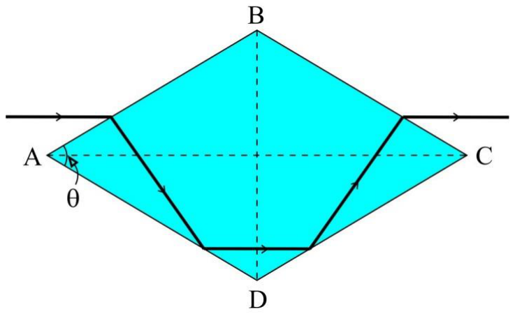
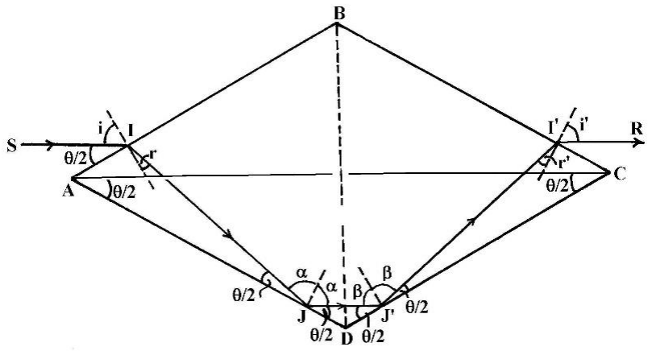
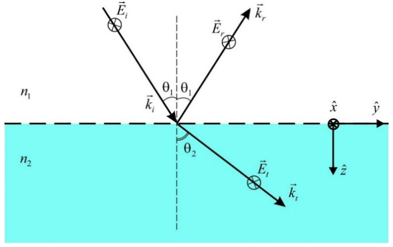
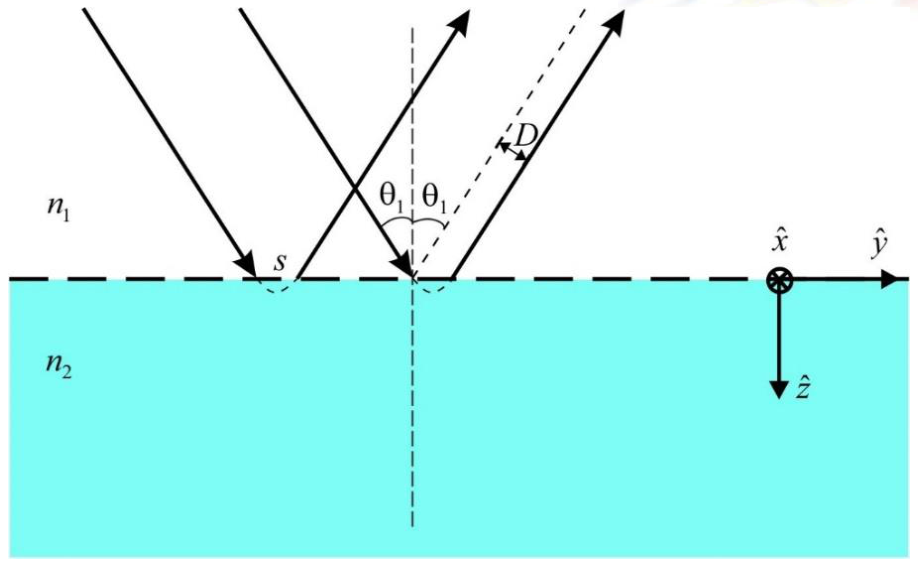

공기 중($n'=1.00$)에 놓인 유리 프리즘의 주단면은 $\angle BAD = \angle BCD \equiv \theta$인 마름모(rhomb) 모양이다. 프리즘을 향해 진행하는 가는 노란색 단색광 빔이 마름모의 대각선 AC에 평행하게 면 AB에 입사한다(그림 1). 빔은 면 AD와 DC에서 전반사(total reflection)된 뒤 면 BC를 통해 나온다. 노란색 복사에 대한 유리의 굴절률(refraction index)은 $n=1.60$이다.

프리즘을 빠져나가는 빔의 전체 편향(total deviation)이 0이 되도록 하는 각 $\theta$를 프리즘의 굴절률 $n$의 함수로 나타내는 수식을 유도하라. 이 조건에서 $n=1.60$일 때 $\theta$의 수치를 도와 분 단위로 계산하라.
풀이:
전체 편향이 0이 되는 것은 $I'R \parallel SI$일 때뿐이다. 이는 $i'=i$이고 $r'=r$임(마름모 프리즘 내부의 대칭 경로)을 뜻한다. 따라서 $JJ' \parallel AC \parallel SI \parallel I'R$이다. 0.25 pt
아래 그림으로부터 $m(\angle J'JD)=m(\angle JJ'D)=\dfrac{\theta}{2}$이고 $m(\angle AJI)=m(\angle CJ'I')=\dfrac{\theta}{2}$이다.
삼각형 $\Delta AIJ$에서 $\theta+\pi/2+r+\theta/2=\pi$이므로 $r=\pi/2-3\theta/2$이다. 0.25 pt

한편 $i=\pi/2-\theta/2$이다. 0.25 pt
굴절 법칙(스넬–데카르트 법칙, Snell–Descartes law)은 $\sin(\pi/2-\theta/2)=n\sin(\pi/2-3\theta/2)$, 즉 $\cos(\theta/2)=n\cos(3\theta/2)$이다. 0.50 pt
그런데
\[\cos(3\theta/2)=\cos(\theta+\theta/2)=\cos\theta\cos(\theta/2)-\sin\theta\sin(\theta/2)=\] \[=[2\cos^2(\theta/2)-1]\cos(\theta/2)-2\sin^2(\theta/2)\cos(\theta/2)=\dots=4\cos^3(\theta/2)-3\cos(\theta/2)\]이므로, 굴절 법칙은 $\cos(\theta/2)\left[1-n\left[4\cos^2(\theta/2)-3\right]\right]=0$이 된다. 해 $\theta=\pi$(즉 180°)는 비물리적이므로 받아들일 수 없고, 따라서 물리적인 해는
즉 $\theta=35^\circ 40'$이다. 0.25 pt
위에서 정한 $\theta$를 갖는 프리즘과 입사 빔의 방향은 그대로 고정되어 있지만, 빛의 성질이 바뀌어 이제는 수은의 노란색 이중선(doublet)으로 이루어져 있다. 두 파장은 각각 579.1 nm와 577 nm이다. 이 파장들에 대한 유리의 굴절률은 각각 $n=1.60$과 $n+\Delta n$이며, $\Delta n=1.3\cdot10^{-4}$이다. 프리즘을 빠져나온 광선은 무한 원점에 초점이 맞춰진 천체 망원경(astronomical telescope)에 축 방향으로 들어간다.
망원경을 통해 보이는 두 상 사이의 „각거리(angular distance)” $\varepsilon$에 대한 수식을 (먼저 $\theta$와 $\Delta n$의 함수로, 다음에 $n$과 $\Delta n$의 함수로) 유도하고 그 수치를 계산하라.
풀이:
입사각은 고정되어 있고($i$ = 일정), $n$과 $n+dn$에 대응하는 두 굴절각 $r$과 $r-dr$이 있다. $\sin i=n\sin r$로부터 $0=dn\sin r+n\cos r\,dr$로 쓸 수 있다. 한편 $\sin i'=n\sin r'$로부터 $\cos i'\,di'=dn\sin r'+n\cos r'\,dr'$로 쓸 수 있다. $dn$(문제에서는 $\Delta n$)은 매우 작은(무한소) 양이므로 $i'=i$, $r'=r$로 근사할 수 있지만, $di'\neq di\;(=0)$이고 $dr'\neq dr\;(\neq 0)$이다. 0.50 pt
뒤에서(아래 참고 참조) $dr'=-dr$임을 보일 것이다.
이제 두 출사 광선 사이의 각, 즉 $\varepsilon\equiv di'$을 구하면
\[\varepsilon=\frac{\sin r}{\cos i}dn+n\frac{\cos r}{\cos i}(-dr)\quad\text{이고}\quad dr=-\mathrm{tg}\,r\,\frac{dn}{n}\]이다. 최종 결과는
이다. $\cos(\theta/2)$의 식을 알고 있으므로, 약간의 대수 계산을 거치면 $\varepsilon$을 다른 형태로 나타낼 수 있다.
수치로는 $\varepsilon=5.1\cdot10^{-4}$ rad (또는 1.7′)이다. 0.25 pt
참고: 삼각형 JDJ′에서 내각의 합이 $\pi$(라디안)임을 쓰면 $(\pi/2-\alpha)+(\pi-\theta)+(\pi/2-\beta)=\pi$, 즉 $\alpha+\beta=\pi-\theta=$ 일정(주어진 마름모 프리즘에서 $\theta$ 고정)이다. 따라서 $d\alpha=-d\beta$이며, 여기서 $\alpha=\theta+r$(삼각형 AIJ 참조), $\beta=\theta+r'$(삼각형 CI′J′ 참조)이다. 지금의 경우 $\theta$가 고정되어 있으므로 $d\alpha=dr$, $d\beta=dr'$이고, 따라서 $dr=-dr'$이다. 0.25 pt
망원경 대물렌즈의 초점 거리가 $f_{ob}=0.40\ \text{m}$일 때, 대물렌즈의 초점면에서 보이는 두 상 사이의 선거리 $y$에 대한 수식을 유도하고 그 수치를 계산하라.
풀이:
\[y=f_{ob}\,\mathrm{tg}\,\varepsilon\approx\varepsilon f_{ob}=2\left(\frac{dn}{n}\right)f_{ob}\sqrt{\frac{3n+1}{n-1}}.\]수치로는 $y=0.20\ \text{mm}$이다. 0.50 pt
전반사는 빛이 굴절률 $n_1$인 매질에서 굴절률 $n_2<n_1$인 다른 매질로 진행할 때, 입사각이 $\theta_1\ge l$일 때 일어난다. 여기서 $l$은 입사각의 임계값으로 임계각(limit angle)이라 부르며, 이 값을 넘으면 굴절광이 존재하지 않는다. 전반사에서는 입사 빔의 에너지 전부가 반사 빔으로 간다.
B1 임계각에 대한 수식을 유도하라. 0.25 pt
풀이:
입사각 $\theta_1$이 임계각 $l$에 도달하면 굴절각은 $\theta_2=90^\circ$가 된다. 이 경우 스넬의 두 번째 굴절 법칙은
\[n_1\sin l=n_2\]를 주므로
전자기 광학은 입사 빔이 전반사될 뿐 아니라 덜 굴절적인(굴절률이 작은) 매질 속으로 소멸파(evanescent wave)로서 침투한다는 것을 보여 준다.
반사 빔과 굴절 빔의 특성은 입사각과 광파의 전기장 방향(편광, polarization이라 부른다)에 따라 달라진다. 간단히 하기 위해 그림 2와 같이 전기장 세기가 입사면에 수직인 경우를 생각하자. 첨자 $i$, $r$, $t$는 각각 입사파, 반사파, 투과파의 성질을 나타내고, $\vec k$는 빛의 진행 방향을 주는 파동 벡터(wave vector)이다. 또한 $\hat x$, $\hat y$, $\hat z$는 선택한 데카르트 기준계의 단위 벡터이다.
물리적 참고: 평면 단색파가 어떤 순간 공간의 한 점에 만드는 교란은 $\vec E(\vec r,t)=\vec E_0\cos\left(\omega t-\vec k\cdot\vec r\right)$로 쓸 수 있으며, 계산을 간단히 하기 위해 복소수 형태 $\vec e(\vec r,t)=\vec E_0e^{i\left(\omega t-\vec k\cdot\vec r\right)}$ ($i=\sqrt{-1}$)로 쓰고 결과의 실수부만 취하기도 한다.

수학적 참고: 복소수 $z=a\pm ib$에서 $a$는 실수부, $b$는 허수부이다. 이는
\[z=\underbrace{\sqrt{a^2+b^2}}_{=|z|}\left(\underbrace{\frac{a}{\sqrt{a^2+b^2}}}_{=\cos\varphi}\pm i\underbrace{\frac{b}{\sqrt{a^2+b^2}}}_{=\sin\varphi}\right)=|z|e^{\pm i\varphi}\]로 쓸 수 있으며, 여기서 $|z|$는 복소수 $z$의 절댓값(modulus)이고 $\tan\varphi=b/a$이다.
입사파가 방정식 $\vec e_i(\vec r,t)=\vec E_{0i}e^{i\left(\omega t-\vec k_i\cdot\vec r\right)}$로 기술되는 평면 단색파임을 알 때, 소멸파의 수식이 $\vec e_t(\vec r,t)=\vec E_{0t}e^{-\alpha z}e^{i\varphi}$임을 증명하고, 감쇠 계수(attenuation coefficient) $\alpha$의 정확한 식을 입사각 $\theta_1$, 임계각 $l$, 입사파의 파장 $\lambda$의 함수로 유도하라. 또한 소멸파의 위상(phase) $\varphi$의 정확한 식을 유도하라.
풀이:
투과파에 대해
\[\vec e_t(\vec r,t)=\vec E_{0t}e^{i\left(\omega t-\vec k_t\cdot\vec r\right)}\]이고, 여기서
\[\vec k_t\cdot\vec r=\left(\hat y k_t\sin\theta_2+\hat z k_t\cos\theta_2\right)\cdot\left(\hat y y+\hat z z\right)=k_t\left(y\sin\theta_2+z\cos\theta_2\right)\]이다.
\[n_1\sin\theta_1=n_2\sin\theta_2\]이므로
\[\cos\theta_2=\pm\sqrt{1-\sin^2\theta_2}=\pm\sqrt{1-\frac{n_1^2}{n_2^2}\sin^2\theta_1}=\pm i\sqrt{\frac{n_1^2}{n_2^2}\sin^2\theta_1-1}\]이다. $\theta_1>l$이기 때문이다.
이 조건에서 투과파의 전기장은 다음과 같이 쓸 수 있다.
\[\vec e_t(\vec r,t)=\vec E_{0t}\,e^{\pm k_t z\sqrt{\frac{n_1^2}{n_2^2}\sin^2\theta_1-1}}\;e^{i\left(\omega t-k_t y\frac{n_1}{n_2}\sin\theta_1\right)}.\]첫 번째 지수함수의 + 부호는 물리적 의미가 없는데, 경계면에서 상당히 떨어진 곳에는 파동이 존재하지 않기 때문이다. 결론적으로 투과(소멸)파의 전기장은
\[\vec e_t(\vec r,t)=\vec E_{0t}e^{-\alpha z}e^{i\varphi}\]의 형태를 가지며, 여기서
\[\alpha=k_t\sqrt{\frac{n_1^2}{n_2^2}\sin^2\theta_1-1}\]는 소멸파의 감쇠 계수이고
\[\varphi=\omega t-k_t y\frac{n_1}{n_2}\sin\theta_1\]는 파동의 위상이다.
이 결과는 파동이 경계면을 따라($y$ 방향으로) 진행하며 $z$ 방향(경계면에 수직)으로 감쇠함을 보여 준다.
그런데
\[k_t=\frac{\omega}{v_2}=\frac{\omega}{v_1}\frac{v_1}{v_2}=k_i\frac{c/n_1}{c/n_2}=k_i\frac{n_2}{n_1}\]이므로
소멸파의 진폭이 경계면에서보다 $e$배 작아지는 경계면으로부터의 거리 $\Delta z$에 대한 수식을 입사 파장 $\lambda$의 함수로 유도하고 그 수치를 계산하라. 첫 번째 매질은 유리$(n_1=1.6)$, 두 번째 매질은 공기$(n_2=1.0)$이며, 빛의 입사각은 $\theta_1=40^\circ$이다.
풀이:
비 $\dfrac{v_e}{v_1}$에 대한 수식을 유도하라. 여기서 $v_e$는 소멸파의 위상 속도(phase speed)이고 $v_1$은 입사파의 위상 속도이다. 빛의 입사각이 $\theta_1=40^\circ$인 경우에 그 수치를 계산하라.
풀이:
소멸파의 위상
\[\varphi=\omega t-k_t y\frac{n_1}{n_2}\sin\theta_1\]을 생각하면, 그 위상 속도는
\[v_e=\frac{\omega}{k_t\dfrac{n_1}{n_2}\sin\theta_1}=\frac{\omega}{k_i\sin\theta_1}=\frac{v_1}{\sin\theta_1}\]이므로, 구하는 비는
임의의 입사각에 대해, 반사파 장의 진폭과 입사파 장의 진폭 사이의 관계는 프랑스 물리학자 오귀스탱 프레넬(Augustin Fresnel, 1788 – 1829)이 유도하였다.
\[E_{0r}=\frac{n_1\cos\theta_1-n_2\cos\theta_2}{n_1\cos\theta_1+n_2\cos\theta_2}E_{0i}.\]물리적 참고: 어떤 순간 공간의 한 점에서 파동이 만드는 교란을 복소수로 나타내면, 파동의 세기(intensity)는 $I=\dfrac12\varepsilon_0cE_0^*E_0=\dfrac12\varepsilon_0c|E_0|^2$로 표현된다. 여기서 $E_0^*=a-ib$는 복소수 $E_0=a+ib$의 켤레 복소수이다. $\varepsilon_0$는 진공의 유전율, $c$는 진공에서의 빛의 속력이다.
B2.4 전반사파가 입사파와 같은 세기를 가짐을 증명하라. 0.50 pt
풀이:
다음이 성립하므로
\[n_2\cos\theta_2=-n_2\sqrt{1-\sin^2\theta_2}=-n_2\sqrt{1-\frac{n_1^2}{n_2^2}\sin^2\theta_1}=-in_2\sqrt{\frac{n_1^2}{n_2^2}\sin^2\theta_1-1}=-i\frac{n_1\alpha}{k_i},\]따라서
\[E_{0r}=\frac{n_1\cos\theta_1+i\dfrac{n_1\alpha}{k_i}}{n_1\cos\theta_1-i\dfrac{n_1\alpha}{k_i}}E_{0i}=\frac{\cos\theta_1+i\dfrac{\alpha}{k_i}}{\cos\theta_1-i\dfrac{\alpha}{k_i}}E_{0i}.\]같은 형태의 임의의 복소수에 대해 다음과 같이 쓸 수 있다.
\[\frac{a+ib}{a-ib}=\frac{\sqrt{a^2+b^2}\,e^{i\varphi_0}}{\sqrt{a^2+b^2}\,e^{-i\varphi_0}}=e^{2i\varphi_0},\]여기서
\[\tan\varphi_0=\frac{b}{a}\]이다. 결론적으로
\[E_{0r}=e^{2i\varphi_0}E_{0i}\]이며, 여기서
\[\tan\varphi_0=\frac{\alpha}{k_i\cos\theta_1}=\frac{1}{\cos\theta_1}\sqrt{\sin^2\theta_1-\sin^2 l}\]이다. 이 조건에서 전반사파의 세기는
유한한 단면을 가진 입사 빔이 두 매질 사이의 경계면에서 전반사되면, 전반사된 빔은 거리 $D$만큼 옆으로 이동한다(그림 3 참조). 이 이동은 1947년 구스(Goos)와 헨헨(Hänchen)이 처음으로 측정하였다. 그림 3에서 경계면을 따른 변위는 $s$이고, 구스–헨헨 이동은 그림에 표시된 측면 이동 $D$이다. 이것이 구스–헨헨 효과이다. 이 측면 이동은 경계면에서 소멸파가 나타나고 그것이 경계면에 평행하게 전파하는 것으로 설명된다.

경계면에서 전반사파와 입사파 사이의 위상차가 0이라고 가정하고, 구스–헨헨 측면 이동 $D$에 대한 수식을 유도하라. 이어서 첫 번째 매질이 유리$(n_1=1.6)$, 두 번째 매질이 공기$(n_2=1.0)$이고 빛의 입사각이 $\theta_1=40^\circ$일 때, 경계면을 따른 변위 $s$의 수치를 입사광의 파장 $\lambda$의 함수로 계산하라.
풀이:
그림 3으로부터
\[D=s\cos\theta_1\]이다. 경계면 위 입사파의 입사점에서 전기장의 위상이 $\Phi_i$이면, 전반사파의 출발점에서 그 위상은
\[\Phi_r=\Phi_i-k_{iy}s+2\varphi_0\]이다. $\Phi_r=\Phi_i$이고
\[k_{iy}=k_i\sin\theta_1\]임을 이용하면
\[s=\frac{2\varphi}{k_i\sin\theta_1}=\frac{\lambda}{\pi}\frac{1}{\sin\theta_1}\tan^{-1}\left(\frac{\sqrt{\sin^2\theta_1-\sin^2 l}}{\cos\theta_1}\right)\]을 얻는다. 최종적으로
$s$의 수치는 $s=5.5\lambda$이다.
구스–헨헨 이동은 경계면에서 복사 펄스가 산란될 때 수반되는 시간 지연으로도 설명할 수 있다. 입사한 복사 펄스는 경계면에서 즉시 산란되지 않고 시간 지연 $\tau$ 후에 매질 1로 다시 나오며, 그동안 펄스는 경계면에 평행하게 전파하여 거리 $s$만큼 이동한다.
시간 지연 $\tau$에 대한 수식을 유도하고, 첫 번째 매질이 유리$(n_1=1.6)$, 두 번째 매질이 공기$(n_2=1.0)$, 빛의 입사각이 $\theta_1=40^\circ$, 단색 복사의 파장이 $\lambda=579.1\ \text{nm}$일 때 그 값을 계산하라. 진공에서의 빛의 속력은 $c=3.0\cdot10^8\ \text{m/s}$이다.
풀이:
출제
Prof. Florea ULIU, PhD
Department of Physics, University of Craiova, ROMANIA
Assoc. Prof. Sebastian POPESCU, PhD
Faculty of Physics, Alexandru Ioan Cuza University of Iași, ROMANIA